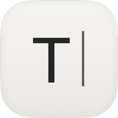
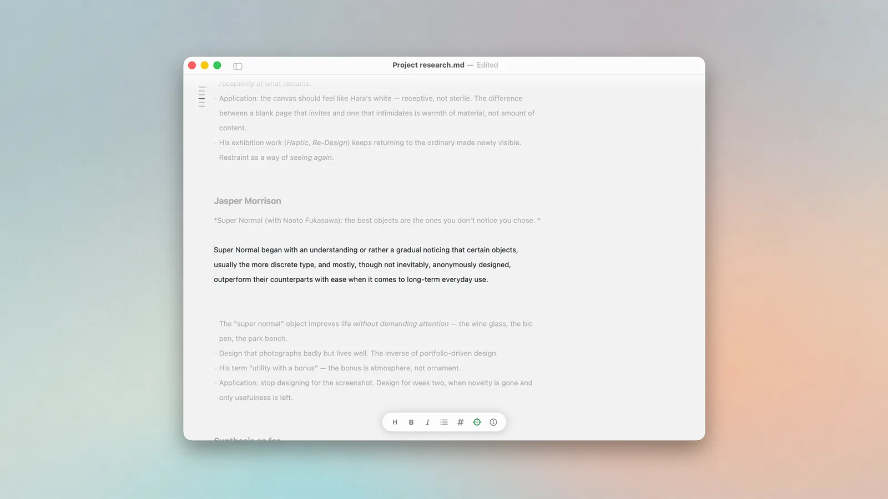
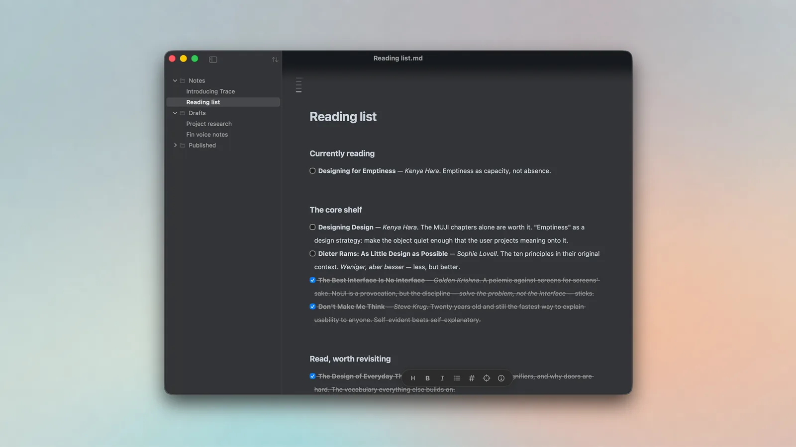
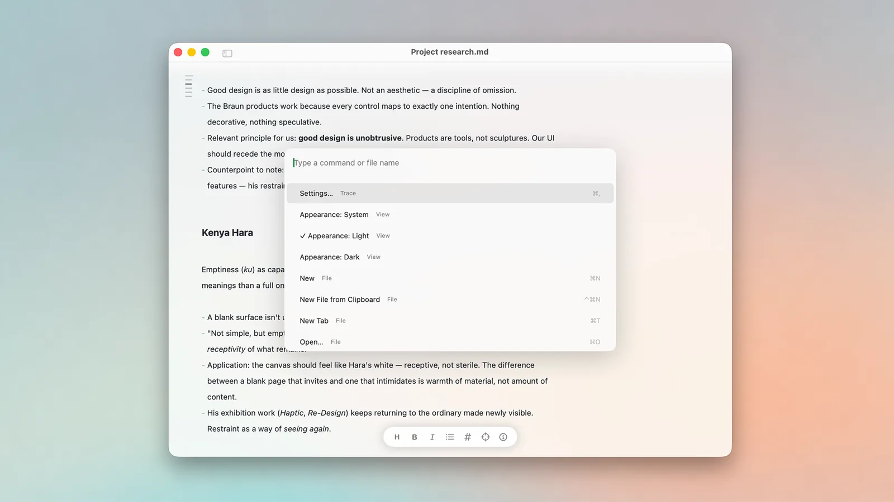

traceA quiet place to write
Trace is a Markdown writer for macOS, built for prose rather than code. The marks fade as you type, so the words are the interface.
Free and open source. Signed and notarised. macOS 15 or later.
Writing without the noise
Most Markdown editors make you choose: stare at raw syntax while you write, or split the screen with a preview pane. Trace does neither. The marks disappear once written, what remains reads like the finished piece, and everything else stays out of sight until you reach for it.
There is no title bar band and no toolbar chrome. The document runs to the edge of the window over a blurred backdrop, and scrolled text dissolves before it reaches the traffic lights.

Everything is a keystroke away
- ⇧⌘H
- Concealed syntaxLinks become clickable text, checkboxes become real checkboxes, code sits in panels with a copy button, and frontmatter tucks into a Properties chip. One toggle brings the plumbing back as a proper source mode.
- ⇧⌘F
- Focus modeDims everything except the lines you are working on, with typewriter scrolling. The text moves, you do not.
- ⌘\
- File sidebarA tree of the writing around your document, or rooted at a folder you choose. Fully keyboard-driven. Hidden by default.
- ⌘K
- Command paletteEvery action, searchable with fuzzy matching. Type "dark" to switch appearance, "focus" to dim the page. Recent files live here too.
- ⇧⌘O
- Open documentJump to any Markdown file near the one you have open, by typing a few letters of its name. No file browser, no library to maintain.
- ⌥`
- Overlay modeSummon a document as a floating panel at the right edge, above whatever else you are doing.
- ⌥⌘C
- Copy as rich textPaste into Mail, Slack or Google Docs with headings, links and formatting intact. A plain paste still gives you the Markdown.


Your files stay yours
Documents are plain .md files on disk. No library, no account, no cloud, no data collection. Your writing outlives the app that made it.
What it does not do
Trace is deliberately smaller than the editor it is built on. No updater, no AppleScript, no extensions manager, no assistant pane, no Pandoc export. If you want the full-featured version, use MarkEdit. It is great.